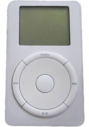

Sir Jonathan Paul Ive, KBE, HonFREng, RDI (born 27 February 1967) is an English industrial designer who is currently the Chief Design Officer (CDO) of Apple and Chancellor of the Royal College of Art in London. While working for a design firm in London he was asked by Apple, then a struggling company, to create a look for a new laptop. He took the design to Apple and was hired immediately. Ive oversees the Apple Industrial Design Group and also provides leadership and direction for Human Interface software teams across the company. Ive is the designer of many of Apple's hardware and software products.
Ive has received a number of accolades for his work. In 2003 he was the inaugural winner of the Design Museum's Designer of the Year Award. In 2006, he was appointed as an Honorary Fellow of the Royal Academy of Engineering (HonFREng), and in 2012, he was made a Knight Commander of the Order of the British Empire (KBE) at Buckingham Palace for "services to design and enterprise". In a 2004 BBC poll of cultural writers Ive was ranked the most influential person in British culture.
Early Life and Education
Ive was born in Chingford, London, England. His father, Michael Ive, was a silversmith who lectured at Middlesex Polytechnic, and his grandfather was an engineer. Ive attended the Chingford Foundation School, then Walton High School, in Stafford. During his high school years, Ive was passionate about cars and it was this interest that led to his later career as a designer.
After leaving Walton, Ive explored the option of studying car design in London, such as the course offered at the Royal College of Art; however, he encountered a learning environment that was off-putting: "The classes were full of students making vroom! vroom! noises as they drew". Instead Ive studied industrial design at Newcastle Polytechnic (now Northumbria University), from which he graduated with a first class Bachelor of Arts degree in 1989. Items from his student portfolio, such as a hearing aid design, were exhibited at the Design Museum in London. Following graduation, Ive was unsure of what area to specialise in; after meeting with various design experts, he was drawn to product design. He was given employment at London design agency Roberts Weaver group, his college sponsor.
Ive explained that his discovery of the Apple Mac, after "having a real problem with computers" during his later student years, was a turning point. Fearing he was "technically inept", he felt the Apple user experience was a departure from the computer design at that time and was particularly impressed by the intuitive mouse-driven system.
On 25 May 2017, it was announced that Ive was appointed Chancellor of the Royal College of Art in London effective 1 July 2017. In this position he serves a fixed five-year term as the Head of College, where he will "preside over meetings and help to govern [the college]." Other duties include: "presiding over meetings of RCA’s advisory committee, attending faculty meetings and conferring degrees at graduation ceremonies." Ive said of the appointment: "I am thrilled to formalise my relationship with the RCA, given the profound influence the college has had on so many of the artists and designers that I admire."
Early Career
Influences
Jonathan Ive is said to have been influenced by German industrial designer Dieter Rams (who served as a designer for Braun). He is also said to have been influenced by the Bauhaus tradition (known for its credos form follows function and less is more), which emerged in Germany during the 1920s and became a staple design approach adopted by the Ulm School of Design during the 1950s. The Bauhaus / Ulm design style was also adopted during the 1980s by Audi, which also influenced Jonathan Ive’s designs (particularly his work with Apple Inc.).
Tangerine
After a year with Roberts Weaver, Jonathan Ive joined a London startup design agency called Tangerine, located in Hoxton Square where he designed a diverse array of products, such as microwave ovens, toilets, drills and toothbrushes. However, his frustration with the position reached a turning point after he designed a toilet, bidet and sink for client Ideal Standard, and the company's boss rejected Ive's work, stating that the products were too costly and looked too modern.
Ive was unhappy working for clients whom he disliked and who didn't possess the same principles. Apple was a Tangerine client that Ive appreciated and he had been acting in a consultancy role for the computer firm while at Tangerine, creating the initial PowerBook designs. Apple had been attempting to recruit him as a full-time employee for two years without success.
WORK AT APPLE
Ive worked as a consultant for Apple's Chief of Industrial Design at the time, Robert Brunner, and eventually became a Apple employee in 1992. He designed the second generation of the Newton, the MessagePad 110, taking him by Taipei for the first time. Shortly before Steve Jobs's return to Apple, Ive nearly resigned from the company. Jon Rubinstein, Ive's boss at the time, managed to retain Ive as an employee by explaining that Apple was "going to make history" following the revival of the company.

iPod - first generation
He became the Vice President of Industrial Design in 1997 after the return of Jobs, and subsequently headed the industrial design team responsible for most of the company's significant hardware products. Ive's first design assignment was the iMac; it helped pave the way for many other designs such as the iPod and eventually the iPhone and the iPad. Jobs made design a chief focus of the firm's product strategy, and Ive proceeded to establish the firm’s leading position with a series of functionally clean, aesthetically pleasing, and commercially successful products. Ive explained the close rapport that existed in his working relationship with Jobs in 2014: "When we were looking at objects, what our eyes physically saw and what we came to perceive were exactly the same. And we would ask the same questions, have the same curiosity about things." Ive described Jobs as "so clever", with "bold" and "magnificent" ideas.
Ive runs his own design office at Apple, in which he oversees the work of his appointed design team, and he is the only Apple designer with a private office. Only his core team — which consists of around 15 people from the UK, the US, Japan, Australia, and New Zealand (who have worked together for around two decades) — and top Apple executives are allowed into the office, as it contains all of the concepts, including prototypes, that the design team is working on. Ive also refuses to allow his children to enter the office. According to the Jobs biography, Ive's design studio contains foam-cutting and printing machines, while the windows are tinted. Jobs told biographer Walter Isaacson: "He has more operational power than anyone else at Apple except me.
On 29 October 2012, Apple announced that "Jony Ive will provide leadership and direction for Human Interface (HI) across the company in addition to his role as the leader of Industrial Design." With the WWDC13 announcement of iOS 7 and Ive's role as principal, the Apple Press information was also updated to reflect his new title: Senior Vice President of Design. The scheduled publication of an unofficial Ive biography was announced in late 2013. Written by Leander Kahney, who conducted interviews with former Apple designers and executives, the book is titled Jony Ive: The Genius Behind Apple's Greatest Products.
On 26 May 2015, Apple announced that Ive was promoted to the new role of Design Officer. Ive is one of only four C-level executives at Apple along with CEO Tim Cook, CFO Luca Maestri and COO Jeff Williams.
 TECH MINDS
TECH MINDS